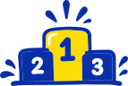

Plavání nás baví!
Od prvních temp až po olympijské úspěchy. Už od roku 1939 vychováváme ve Zlíně nové generace plavců, spojujeme lidi se stejnou vášní a ukazujeme, že plavání je víc než jen sport.
Kdo jsme
Ve vodě jsme doma.
Jsme Plavecký klub Zlín. Místo, kde se potkávají začínající plavci, mladé talenty i zkušení závodníci.
Plavání se věnujeme už od roku 1939. Za tu dobu jsme vychovali řadu úspěšných sportovců a reprezentantů, ale naší největší motivací zůstává radost z pohybu a chuť posouvat se dál.
Dětem pomáháme získat jistotu ve vodě, rozvíjet své schopnosti a objevovat kouzlo sportu. Pokročilým plavcům vytváříme podmínky pro další sportovní růst.
Věříme v týmového ducha, vytrvalost, fair play a přátelství, která často vydrží i dlouho po posledním tréninku.
Rok, kdy se začal psát příběh organizovaného plavání ve Zlíně.
Československých a českých rekordů v kategorii dospělých podle historické evidence klubu.

2× 5.Místo Daniela Málka na olympijských hrách v Sydney 2000.
Historie
Už od roku 1939 plaveme spolu.
Začínali jsme s velkým nadšením a jedním bazénem. Dnes máme za sebou desítky let sportovních úspěchů a generace plavců, kteří zanechali stopu v historii českého plavání.
Úspěchy a osobnosti
Malý bazén? Velké úspěchy.
Zlínské plavání má za sebou úspěchy na domácí i světové scéně. Od mistrovských titulů přes české rekordy až po účast na olympijských hrách. Za každým výsledkem stojí hodiny tréninku, odhodlání a lidé, kteří plavání věnovali velkou část svého života.
Trenéři
Za každým plavcem stojí skvělý tým.
Trenéři, kteří předávají své zkušenosti, podporují nové talenty a pomáhají plavcům překonávat vlastní hranice. Na dlouholeté úspěšné trenérské tradici klubu dnes staví hlavní trenér dorostu a dospělých Mgr. Zdeněk Kasálek společně s trenéry jednotlivých plaveckých skupin. Ať už jde o první plavecké krůčky, nebo přípravu na významné závody, naším cílem je vytvářet prostředí, kde se plavci mohou rozvíjet a kde je sport především baví.
Naše závody
Naše závody

Partneři
Děkujeme partnerům
Dokumenty
Dokumenty ke stažení
Stanovy, směrnice, ročenky a další podklady klubu.